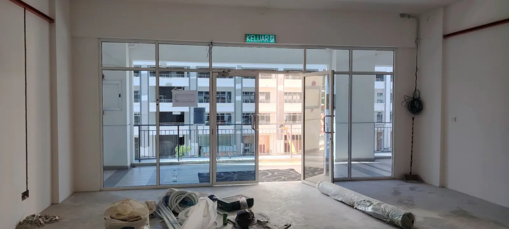
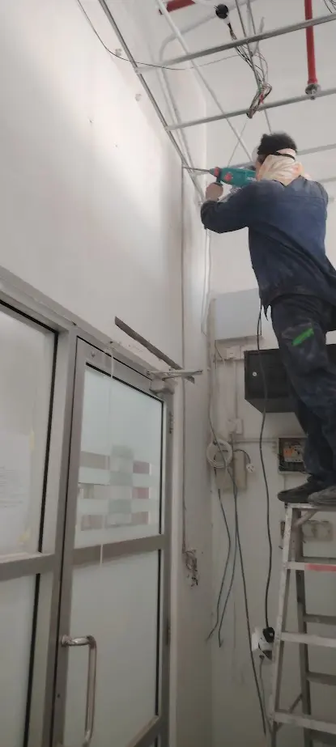

RECENT PROJECTS
Real work.
Practical solutions.
These selected projects show how Mobit Solution helps local businesses improve access control, network reliability and daily operations. We study the site, recommend a suitable setup, install it properly and provide support after completion.
ANPR & VEHICLE ACCESSFaster, controlled vehicle entry.
The site needed a better way to identify vehicles and manage entry. We installed ANPR cameras and access equipment to record number plates and improve entrance control.
The result is a smoother entry process with clearer vehicle records for the management team.
NETWORK & SERVERA more reliable business network.
The customer needed stable connections for computers, business systems and daily work. We arranged the network switch, server and UPS backup so important equipment stays organised and easier to maintain.
The completed setup gives the business a cleaner foundation for reliable operation and future expansion.
NETWORK RACK & SECURITYProtected, manageable network infrastructure.
We set up a central network rack with a business firewall, managed network switch, labelled connections and UPS backup for essential equipment.
This gives the customer a more secure and organised network that is easier to monitor, maintain and expand as the business grows.
STRUCTURED NETWORK CABLINGCentralised connections for stable operations.
We connected the customer’s computers and business devices through a central network switch inside the data rack.
The completed setup provides more reliable connections and makes future troubleshooting, maintenance and network expansion easier.
SMART DOOR ACCESSSimple and secure staff entry.
The customer wanted to control staff entry without depending on normal keys. We installed fingerprint and face-recognition access terminals at the required entrances.
Authorised staff can enter more conveniently, while management has better control over access points.
FACE-RECOGNITION ACCESSFast, keyless entry for authorised staff.
We installed a face-recognition access terminal on the customer’s glass entrance to replace the need for normal keys or shared access cards.
Authorised staff can enter more conveniently while management maintains better control over who can access the premises.
COMMERCIAL CCTV INSTALLATIONCarefully positioned for better coverage.
Our technician installed the CCTV point and routed the required cabling at the customer’s commercial premises.
After installation, the camera position and connection were checked to provide dependable monitoring for the selected area.


NEW OFFICE CABLINGTechnology planned before move-in.
During the office renovation, we planned and routed the required network and system cabling before the ceiling and interior work were completed.
Early preparation helps keep the finished office cleaner and ensures the necessary connection points are ready for computers, Wi-Fi and other business systems.
NETWORK BACKBONE & RACKCentral infrastructure built for expansion.
We routed the site’s main technology cabling to a central wall-mounted rack, creating a dedicated point for network and security equipment.
The protected cable routes make the system easier to organise, maintain and expand when the business adds more computers, Wi-Fi access points or CCTV cameras.
COMMERCIAL CABLE ROUTINGReliable wired connections across the site.
We routed commercial-grade network cabling along the required path to connect business areas that needed dependable wired access.
The new cable route prepares stable connections for computers, network equipment and Wi-Fi access points while supporting future expansion.
NETWORK OUTLET INSTALLATIONConnection points placed where work happens.
We prepared and terminated the network outlets at the planned positions for the customer’s computers and business equipment.
Each connection point was aligned and checked before handover, helping the finished office stay practical, organised and ready for daily use.
Every business site is different. Mobit Solution recommends equipment and installation methods based on the location, daily operation and practical budget—not a one-size-fits-all package.